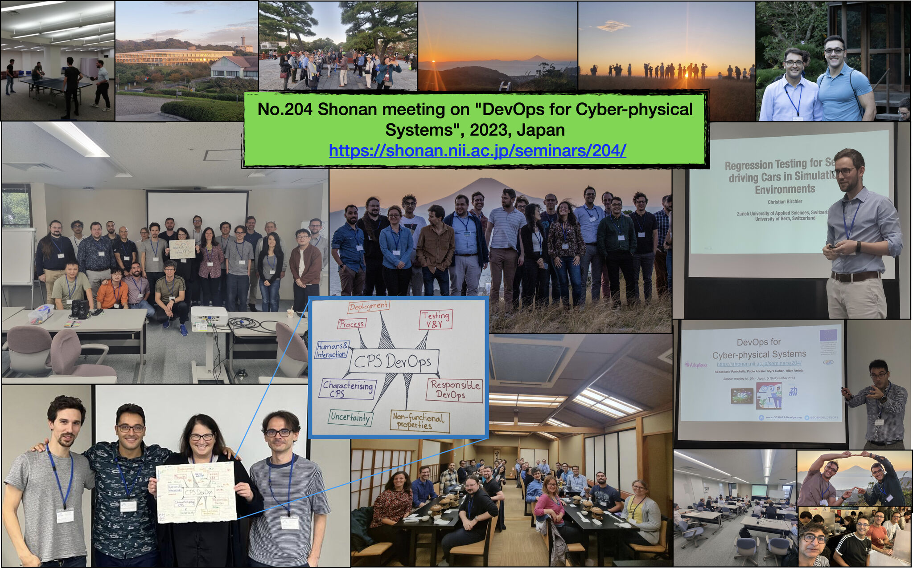

Paper accepted at FSE 2024: "How does Simulation-based Testing for Self-driving Cars match Human Perception?". ACM International Conference on the Foundations of Software Engineering. 2024.
Paper accepted at SoftwareX 2024: "Identifying Safety-Critical Concerns in Unmanned Aerial Vehicle Software Platforms with SALIENT". SoftwareX Journal. 2024.
Paper accepted at ICSE 2024: "Simulation-based Testing of Unmanned Aerial Vehicles with Aerialist". International Conference on Software Engineering. 2024.
Paper accepted at MSR 2024: "SensoDat: Simulation-based Sensor Dataset of Self-driving Cars". Mining Software Repositories (MSR). 2024.
Paper accepted at SBFT 2024: "Diversity-guided Search Exploration for Self-driving Cars Test Generation through Frenet Space Encoding.". Intl. Workshop on Search-Based and Fuzz Testing. 2024.
Project accepted by the Swiss National Science Foundation !! Project entitled "SwarmOps: Human-sensing based MLOps for Collaborative Cyber-physical systems"
Project accepted by the Hasler Foundation!! Project entitled "Bridging the Reality Gap in Testing Unmanned Aerial Vehicles"
Led a Shonnan meeting with the National Institute of Informatics (NII), Japan, on the topic: "DevOps for Cyber-physical Systems" - See the visual summary of the meeting: (image).

Paper accepted at ASE 2023: "TEASER: Simulation-based CAN Bus Regression Testing for Self-driving Cars Software". International Conference on Automated Software Engineering - 2023.
J1 presentation at ICSE on "Single and Multi-objective Test Cases Prioritization for Self-driving Cars in Virtual Environments" - slides - 2023
The Google Open Source Security Team (GOSST) shared a blogpost highlighting the significance of the SBFT event I have led in 2023
Leading of the Intl. Workshop on Search-Based and Fuzz Testing (SBFT): here the slides and Video of the international event - 2023
Leading of the Intl. Workshop on NL-based Software Engineering workshops (NLBSE): here the slides and Video of the international event - 2023
Keynote presentation at ICST (AIST workshop) entitled "Testing and Development Challenges for Complex Cyber-Physical Systems: Insights from the COSMOS H2020 Project" - slides
J1 presentation at ICST on "An Empirical Characterization of Software Bugs in Open-Source Cyber-Physical Systems" - slides - 2023
COSMOS H2020 project presentation at WASOS workshop, hosted with HiPEAC (slides) - 2023
Paper accepted at ICST 2023: "Simulation-based Test Case Generation for Unmanned Aerial Vehicles in the Neighborhood of Real Flights". International Conference on Software Testing, Verification and Validation. - 2023
Best PhD Thesis Award: Congratulations to Pooja Rani on receiving an award at the University of Bern for her Ph.D. thesis entitled "Assessing Comment Quality in Object-Oriented Languages" (image)
Paper accepted at EMSE Journal 2023: "Machine Learning-based Test Selection for Simulation-based Testing of Self-driving Cars Software". Empirical Software Engineering.
Paper accepted at STVR Journal 2023: "JUGE: An Infrastructure for Benchmarking Java Unit Test Generators". Software Testing, Verification and Reliability journal.
Paper accepted at JSS Journal 2023: "A Decade of Code Comment Quality Assessment: A Systematic Literature Review". Journal of Systems & Software
Paper accepted at SCP journal 2022: "Cost-effective Simulation-based Test Selection in Self-driving Cars Software". Science of Computer Programming journal.
Paper accepted at TOSEM journal 2022: "Automated Identification and Qualitative Characterization of Safety Concerns Reported in UAV Software Platforms". Transactions on Software Engineering and Methodology
Paper accepted at TOSEM journal 2022: "Continuous Integration and Delivery practices for Cyber-Physical systems: An interview-based study". Transactions on Software Engineering and Methodology
Paper accepted at JSS Journal 2022: "An Empirical Characterization of Software Bugs in Open-Source Cyber-Physical Systems". Journal of Systems & Software
Supporting grant accepted Doctoral funding at the SoE ZHAW (2022-2025): The funding will support and complement the studies of a Ph.D. student working in the context of the COSMOS H2020 project (contract no. 957254). - link
Paper accepted at EMSE Journal 2022: "Test Smells 20 Years Later: Detectability, Validity, and Reliability". Empirical Software Engineering.
Award at MSR: "MSR 2022 Distinguished Reviewer Award" - link
Paper accepted at TOSEM journal 2022: "Single and Multi-objective Test Cases Prioritization for Self-driving Cars in Virtual Environments" - Preprint
Ph.D.: Pooja Ruhal (University of Bern) successfully defended her Ph.D. thesis entitled "Assessing Comment Quality in Object-Oriented Languages" in February 2022. - link
Reviewer/opponent of a Ph.D. Dissertation of Nitish Shriniwas at University of Bern, Institute of Computer Science (March 2022).
Lecturer at the Summer School on "Search- and Machine Learning Software Engineering" - link - slides
...
Leading of the Intl. Workshop on NL-based Software Engineering workshops (NLBSE): here the and slides and Video of the international event - 2022
Leading of the Intl. Workshop on Search-Based Software Testing (SBST): here the and slides and Video of the international event - 2022

{kind=link}
{kind=link}